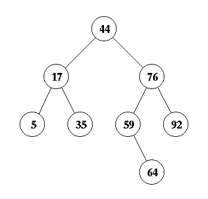
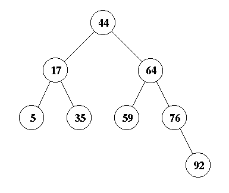
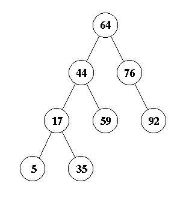
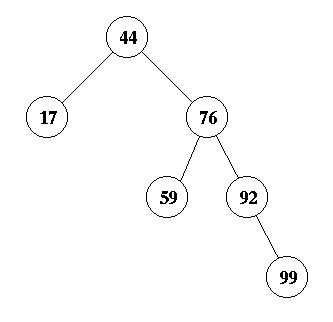
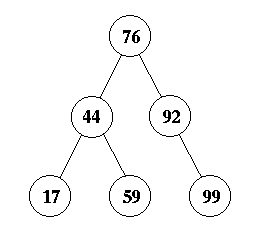
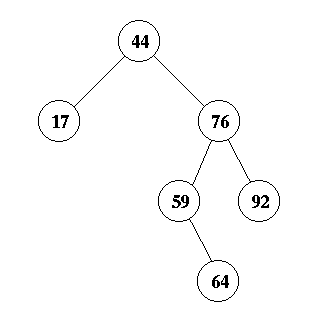
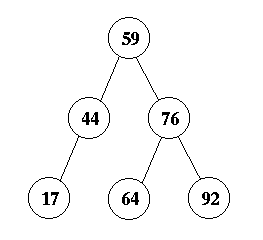

This file:
http://www.cs.utk.edu/~plank/plank/classes/cs140/Tests/1999-Spring/final/answers.html
Question 1:
a, d, e and f are all valid binary search trees. b is not since
10 is 4's left child and is greater than 4, and c is not for the same
reason.
Question 2:
a is an AVL tree because it is completely balanced.
e is also an AVL tree. b and c are not because they are not binary
search trees. d and f are both imbalanced around the root node.
Question 3:
c is the only heap. It is a complete tree
where each node is less than its children. B looks like a heap
since each node is less than its children, but it is not a complete
tree (or even complete down to the last level). F also looks like
a heap where each node is greater than its children, but it too is
not a complete tree down to the last level.
Question 4:
You will insert 64 as the right child of 59, and then splay it to
the top. This will require three rotations.
Question 5:
First, you insert 64 in the right place, which is as the right child
of node 59:

Then you perform a zig-zag (double rotation) on node 64:

Now, node 64 is one level from the top. Do a single rotation to make
it the root. This is the answer:

Question 6
First, you insert 99 as the right child of 92.

Now, this creates
an imbalance at node 44 due to a zig-zig. Therefore, you perform
a single rotation about node 76 to yield the answer:

Question 7
First, you insert 64 as the right child of 59.

Now, this creates
an imbalance at node 44 due to a zig-zag. Therefore, you perform
a double rotation about node 59 to yield the answer:

Question 8:
- (a) prints out exactly n*n lines.
- (b) prints out exactly n/5 lines.
- (c) prints out exactly log(n) lines.
- (d) prints out exactly log(n)*(4n+2) lines.
- (e) prints out exactly 4n*n lines.
- (f) prints out exactly n*n lines.
Therefore, only (c) is O(log(n)).
Question 9:
Both b and c are O(n). Remember, if a function
is O(f(n)) and g(n) > f(n), then the function is also O(g(n)).
Question 10:
b, c, and d are all O(n*log(n)).
Question 11:
All the functions are O(n*n).
Question 12:
Only b is Theta(n).
Question 13:
a, e and f are Omega(n*n).
Question 14:
There are four steps to writing this code:
- Allocating storage for a new node.
- Initializing the new node.
- Finding where the node goes.
- Inserting it in the right place.
Here's the code:
void insert_node(Bstree *tree, char *key, Jval v)
{
BstreeNode *newnode, *tmp;
/* Allocating storage for a new node. */
newnode = (BstreeNode *) malloc(sizeof(BstreeNode));
/* Initializing the new node */
newnode->key = key; /* you don't have to strdup, but I didn't take off
for it */
newnode->val = v; /* Not new_jval_v(v). V is already a jval */
newnode->left = NULL;
newnode->right = NULL;
/* If the tree is empty, make this node the root */
if (tree->root == NULL) {
tree->root = newnode;
return;
}
/* Otherwise, find where it should go and insert it */
tmp = tree->root;
while(1) {
if (strcmp(tmp->key, key) > 0) {
if (tmp->left == NULL) {
tmp->left = newnode;
return;
}
tmp = tmp->left;
} else {
if (tmp->right == NULL) {
tmp->right = newnode;
return;
}
tmp = tmp->right;
}
}
}
Note, you can't make insert_node() recursive, because it takes a
Bstree as its argument, and not a BstreeNode. A recursive
solution is possible by writing a recursive function called by
insert_node(). The while() loop is much easier.
Question 15:
- (a) does not work since h can be increased past the
end of the hash table.
- (b) works just fine.
- (c) isn't even close -- it compares the index to the key and then
returns the table entry.
- (d) is close, except it shouldn't test if ``(hash(table[j], tsize) == h)''.
Instead, it should test if ``table[j] == key''.
Question 16:
Given these inputs, h eventually gets a
value of 10, and table[10] is unknown. Therefore, the answer
is p (undetermined). We could be dumping core, or returning some
number bigger than 10.
Question 17:
This works fine, and returns -1. The answer is q.
Question 18:
j will started out as 8. Since
``(j == key)'', it will return table[j], which is 88. The
answer is n.
Question 19:
Again, j will start out as 8.
hash(table[8], tsize) equals 8, as does h. Therefore
the procedure will return 8. The answer is i.